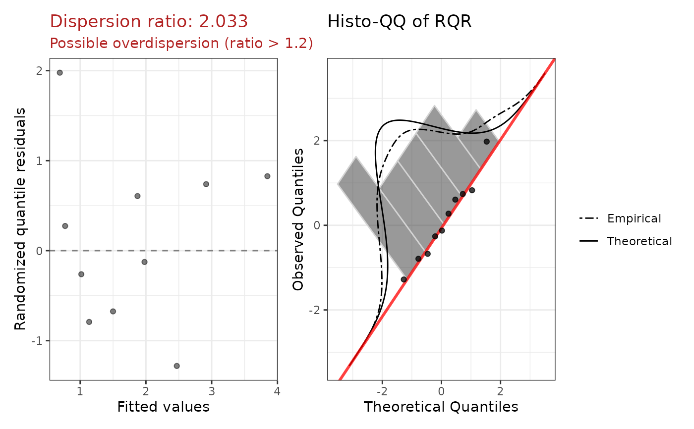

Fits a Tweedie GLM (via glmmTMB::glmmTMB()) and returns model coefficients
on the response scale (exponentiated), randomized quantile residuals (RQR),
estimated dispersion (phi) and power (p) parameters, and diagnostic
plots. The Tweedie family generalises Poisson and Gamma distributions and is
well-suited to non-negative semi-continuous data with a point mass at zero.
Arguments
- formula
A model formula (e.g.
y ~ x1 + x2). The response must be non-negative.- data
A data frame containing the variables in
formula.- assessZeroInflation
Logical; when
TRUE(default), runs a DHARMa simulation-based zero-inflation test after fitting. Issues a warning if significant zero-inflation is detected and addszi_testto the returned diagnostics. Set toFALSEwhen calling fromcountGLM(), which performs its own zero-inflation assessment.- ...
Additional arguments passed to
glmmTMB::glmmTMB().
Value
An object of class c("tweedieGLM", "countGLMfit"), a list with:
callThe matched call.
modelThe underlying glmmTMB::glmmTMB fit object.
summaryThe result of
summary()on the fitted model.phiThe estimated Tweedie dispersion parameter (phi).
pThe estimated Tweedie power parameter (p), restricted to (1, 2). Values near 1 resemble Poisson; values near 2 resemble Gamma.
NAif the parameter cannot be extracted from the fit.coefficientsA data frame with columns
term,exp.coef,lower.95,upper.95,p.value, andstars(all on the response/exponentiated scale).diagnosticsA list with:
rqrNumeric vector of randomized quantile residuals (DHARMa simulation-based, converted to normal scale).
dispersion_ratioPearson chi-squared / df.residual.
plotPatchwork ggplot: fitted vs RQR and histo-QQ.
r2_plotSquared Pearson residuals vs fitted values.
zi_testWhen
assessZeroInflation = TRUE, a list withdetected(logical),p_value(numeric), andplot(ggplot histogram of DHARMa simulated zero proportions vs observed).NULLwhenassessZeroInflation = FALSE.
aicAIC of the fitted model.
bicBIC of the fitted model.
Details
Three parameters: The Tweedie family is characterised by three estimated
quantities: the regression coefficients (mean structure, via a log link),
the dispersion phi (Var(Y) = phi * mu^p), and the power p (1 < p < 2).
When p is close to 1, the variance structure resembles Poisson; when
close to 2, it resembles Gamma.
Coefficient interpretation: Exponentiating a coefficient gives the multiplicative change in the expected response for a one-unit increase in the predictor, holding all other predictors constant.
When to use: Tweedie regression is appropriate for non-negative
semi-continuous data with exact zeros and continuous positive values, or
when count data have complex variance structures not well captured by Poisson
or negative binomial. If zero-inflation is also detected, consider
zeroinflTweedieGLM().
Examples
df <- data.frame(
y = c(0, 0, 1.5, 3.2, 5.8, 0, 0.9, 4.1, 0, 2.7),
x1 = c(1.2, -0.4, 0.8, -1.1, 2.0, 0.3, -0.9, 1.5, -0.2, 0.7)
)
fit <- suppressWarnings(tweedieGLM(y ~ x1, data = df))
print(fit)
#>
#> Call:
#> tweedieGLM(formula = y ~ x1, data = df)
#>
#> Model family: tweedieGLM
#>
#> Coefficients (on response scale):
#> term exp.coef lower.95 upper.95 p.value stars
#> (Intercept) 1.2700 0.5923 2.7229 0.5391
#> x1 1.7403 0.9555 3.1698 0.0701 .
#>
#> Dispersion (phi): 1.4059
#> Power (p): 1.0420
#> Dispersion ratio: 2.0335
#> AIC: 40.64
plot(fit)
